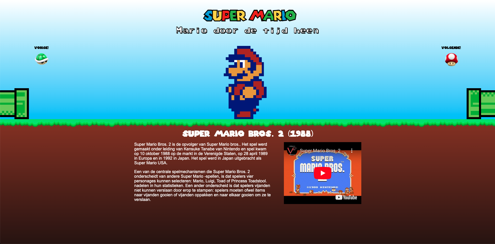
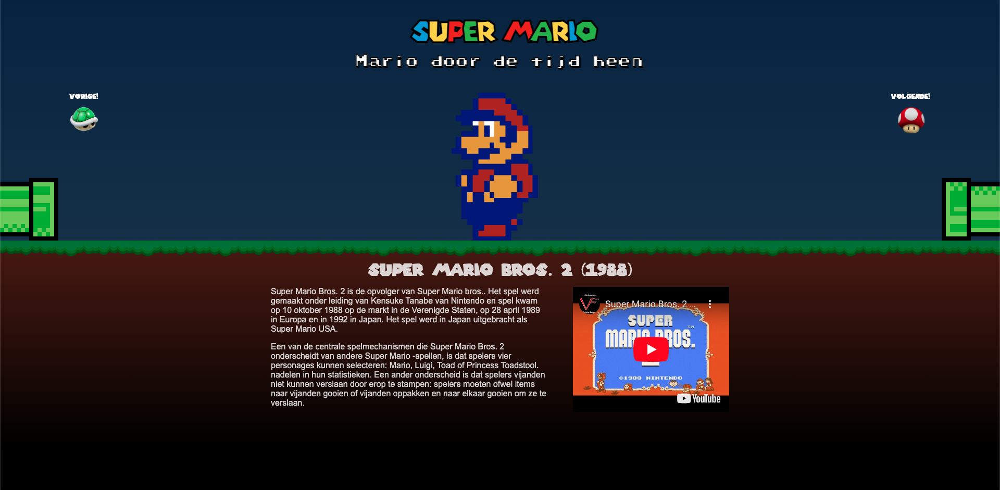

Bij Interface & Interactie kon je kiezen uit twee opdrachten. Ontwerp en realiseer één pagina - met vanilla html, css en indien nodig js. Ik heb gekozen voor opdracht 1: een aantrekkelijke, informatieve en passende tijdlijn voor een inmiddels klassiek karakter/product. Hierbij heb ik het karakter Mario Gekozen.
Naar GitHub Procesverslag Naar Prototype  